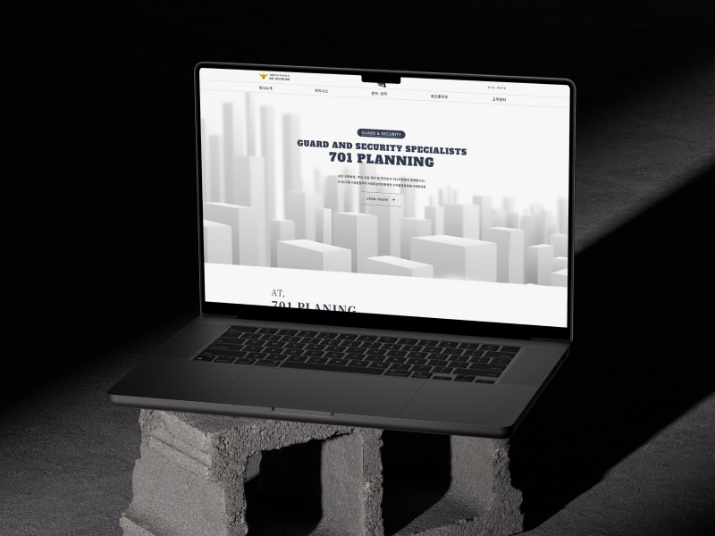
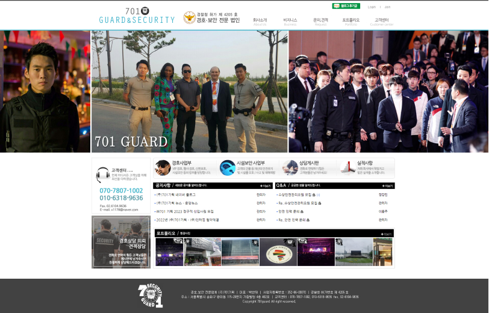
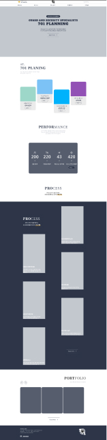
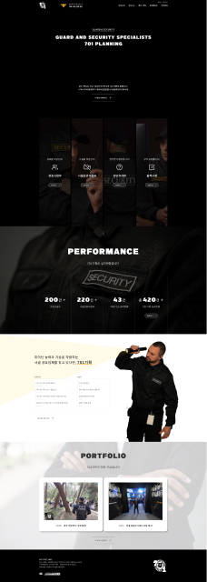
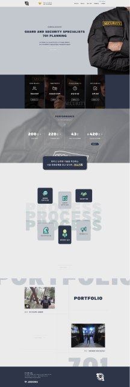
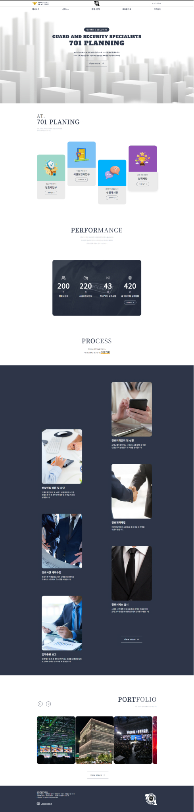
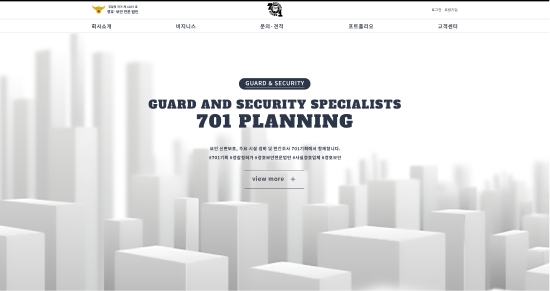

Web design
& App & Animation
701 기획
- 작업기한 : 2024. 04. - 2024. 07.
- 사용툴 : illustrator, photoshop, vs code
- 제작참여도 : 100%

Problem
701기획은 대표 사설민간경호업체이다.
701기획 사이트를 리뉴얼 제작하였다.
기존 홈페이지에서 불편하다고 생각한 부분인
가독성이 떨어지며 현 트렌드에 결여되는 문제
에 따라 클라이언트 입장으로 UX설계를 기획,
진행하였다.

Solution
기존 사이트 메인 화면 구성 보다 클라이언트 입장에서 중요한 메뉴들
로 정리하였다. 구체적으로 클라이언트들이 빠르게 정보를 습득 및 의뢰할
수 있도록 레이아웃을 구성하였다.
또한, 수 많은 경호업체 중에 701기획을 선택해야 할 이유에 대한 타당성을
주장하기 위한 작업을 하였다.
기존 사이트 메인 화면 구성 보다 클라이언트
입장에서 중요한 메뉴들로 정리하였다.
구체적으로 클라이언트들이 빠르게 정보를
습득 및 의뢰할 수 있도록 레이아웃을 구성하
였다.
또한, 수 많은 경호업체 중에 701기획을 선택
해야 할 이유에 대한 타당성을 주장하기 위한
작업을 하였다.
Wireframe & Develop
- 
- 
- 

Layout
CheckPoint
클라이언트 입장에서 편리성을 생각하며 UI 설계하였다.
빠르게 정보를 습득 및 의뢰할 수 있도록 구성하였다.
클라이언트 뿐만 아니라, 701 기획 지원자들을 고려하여
설계되었다.
클라이언트 입장에서 편리성을 생각하며
UI 설계하였다.
빠르게 정보를 습득 및 의뢰할 수 있도록
구성하였다.
클라이언트 뿐만 아니라, 701 기획 지원자
들을 고려하여 설계되었다.

701 기획
- 작업기한 : 2024. 04. - 2024. 07.
- 사용툴 : illustrator, photoshop, visual studio code
- 제작참여도 : 100%
- GO TO SITE